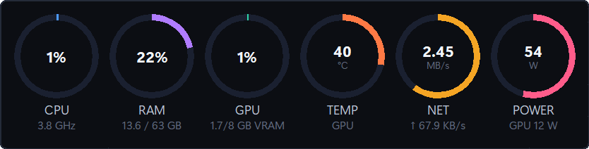

System Widget
ActiveAn always-on-top monitor for Windows that shows CPU, RAM, GPU, temperature, network throughput and estimated power in one line. It sits over the taskbar, stays above borderless games, and gets out of the way when you lock it.
- Windows 10 / 11
- Python · Tkinter
- NVIDIA NVML
- v1.2.10